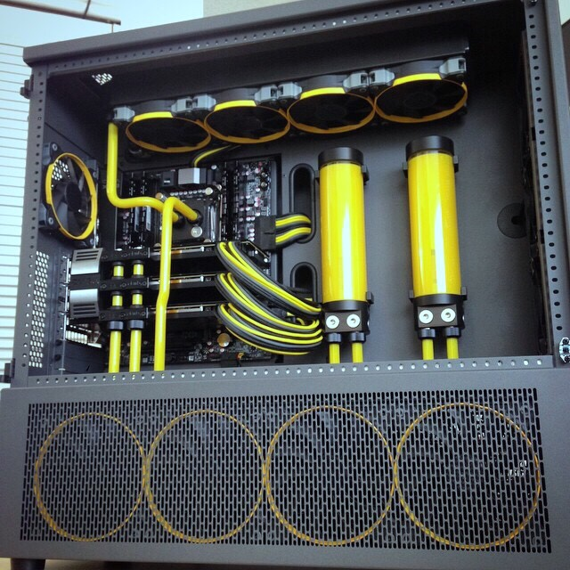
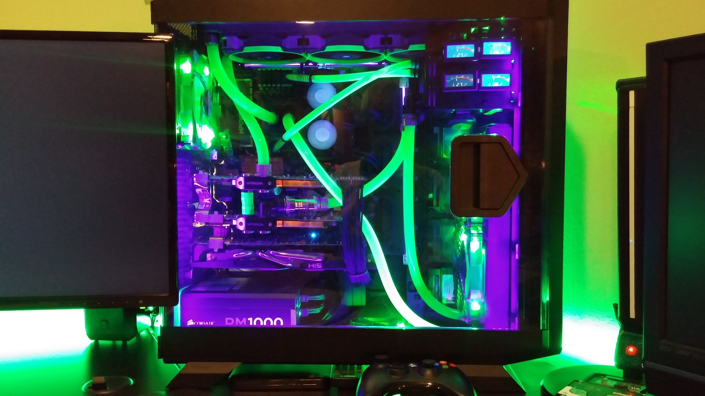
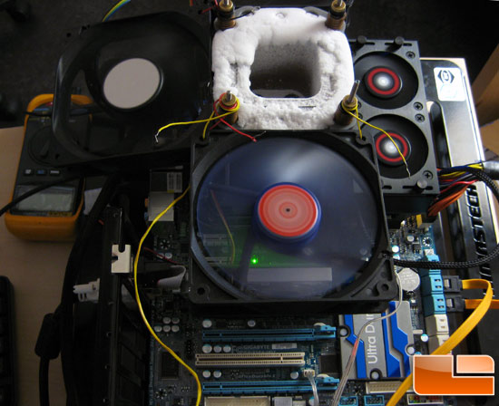

Overclocking Summary
Overclocking is the process of pushing hardware beyond what it is specified to do. Overclocking can dramatically increase performance if done correctly. This process also results in additional power draw to maintain this overclocked speed and creates much more heat. Enthusiasts often use very large heatsinks with powerful fans, watercooling loops (such as in the picture to the bottom left, or Skunkworks made by JayzTwoCents to the left), and even extreme cooling like liquid nitrogen (below).
Hardware prerequisites include needing an overclocking-capable motherboard as well as an unlocked processor. Discover if your hardware supports this by reaccding the technical specifications for your hardware.
Overclocking is most often done in two steps: increase the core multiplier until the system crashes, then increase voltage to stabilize that clock. This process is done many times to keep pushing the processor to the fastest it can go.
When overclocking, the user must carefully watch voltages and heat output. Letting one of these go out of control will destroy the processor. Look up technical specifications for your specific processor before beginning to overclock!
Water Cooling
Water cooling a PC is the most cost-effective way of achieving the highest possible clock without going to the extremes. In today's market, a closed loop cooler (where the entire liquid loop is pre-assembled and ready to bolt on) can be found for around the $100 mark, versus $30 to $80 for an air cooler. Where air coolers offer decent performance, closed loop coolers can allow for an additional 15% overclock due to lowering the temperatures much more than air cooling can achieve.
Custom loops, such as the one in the picture to the left, are hand-assembled to the owner's desires. These loops offer extreme cooling potential, but cost around $200 per processor cooled. The picture to the left contains over $800 in water cooling componentry alone. Custom loops can expect to see an additional 10-15% additional performance over closed loops.
Liquid nitrogen
Liwuid nitrogen (LN2) cooling is perhaps the most extreme method of overclocking. To do this, the owner must thoroughly insulate the motherboard with non-conductive materials such as petrolium jelly or modeling clay. Without this, the condensation and ice that will form due to the extreme cold of the nitrogen would quickly kill off the tech.
World records are achieved with this method. It is not necessarily that expensive, but cannot be used as a "daily" PC. The "pot" that sits on the processor must be constantly refilled with nitrogen or it will quickly overheat.
Clock speeds on liquid nitrogen can hit as high as 8 GHz!